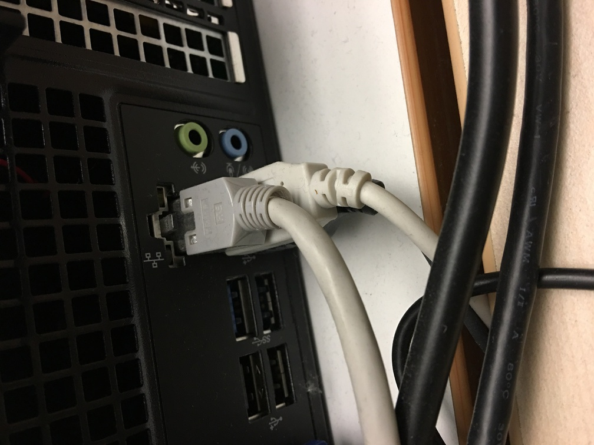

Zweifelsohne verbringen wir die meiste Zeit irgendwo im Netz. Wenn das Netz ausfällt – was es glücklicherweise selten macht –, merkt man das erst richtig. Gut, dass es dann noch ein paar Bücherregale gibt, in denen man mal wieder Ordnung schaffen kann.
Meine Kolleginnen. Wir sind eine Two-Persons-Library mit Hilfskraft und ich habe einen sehr großen Respekt für Kolleginnen aus OPLs, die alles alleine stemmen.

Wir sind gerade bei einem Projekt, bei dem wir mehrere tausend Bücher umstellen. Physische Medien sind in ihrer Verwaltung, Bearbeitung und täglichen Handhabung sehr aufwendig. Irgendwann dachte ich mal – in den Anfangsjahren der bibliothekarischen Tätigkeit – so ein Regal ist schnell umgeräumt oder ein paar Bücher schnell neu signiert. But, boy, was I wrong…

Auf dem Foto sieht man die ausgedruckten Titelseiten aller am Institut erstellten Publikationen im Jahr 2016. Ich sehe sie auch als ein Ergebnis der von Bibliotheken bereitgestellten gemeinsamen und lokalen Infrastrukturen, ohne die Forschung nicht möglich wäre und die hier wieder zurück in die Bibliothek finden.

Auch wenn es das absolute No-Go ist, muss ich zugeben: Ich bin ein Fan von Benutzungsspuren. Dieses Buch haben wir zufällig bei der Bestandsdurchsicht gefunden. Elektronische Medien, für die wir heute den Großteil unseres Budgets ausgeben, haben diese Spuren nicht. Bei allen Vorteilen, die digitale Medien haben, vermisse ich es ein wenig, dass Dateien niemals Geschichten erzählen werden können.
Bibliothek des Leibniz-Instituts für Gewässerökologie und Binnenfischerei (IGB) im Forschungsverbund Berlin e.V., am Nordufer des Müggelsees in Berlin-Friedrichshagen.
Lydia Koglin, nach geisteswissenschaftlichem Studium und bibliothekswissenschaftlicher Ausbildung an einer Universitätsbibliothek jetzt Leiterin einer Two-and-half-Woman-Bibliothek eines umweltwissenschaftlichen Forschungsinstituts.